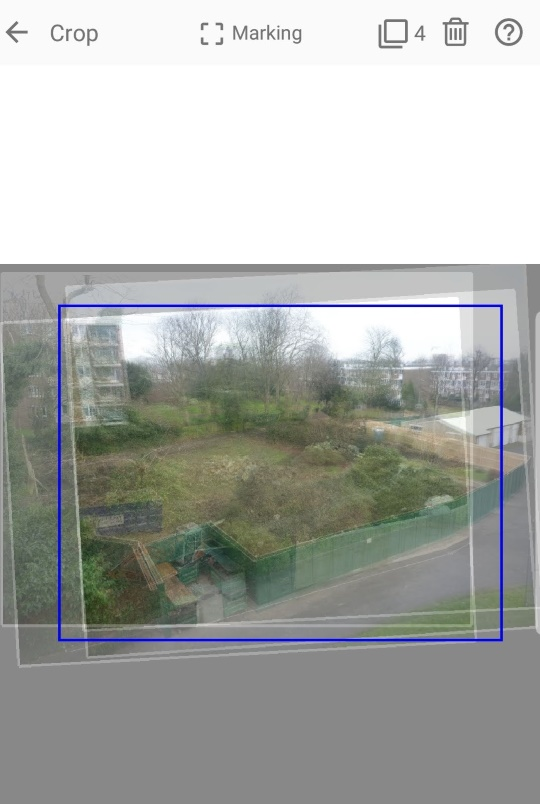

The project's "average" image is used in specifying a crop of the images from which to generate the video. The "average" image is made by aligning the images to the project's target image (the first image in the gallery) and then merging the aligned images into a single image. Following the alignment, it is very unlikely that all the image boarders will be aligned. In fact the (virtual) stack of images will probably resemble a very untidy deck of cards. In such cases the edges of the crop may lie outside some image boarders. (Generally, the wider/larger the crop, the greater the number of images that will not fully cover the crop.)
Two examples showing an average image, produced from a project of four images, with a user specified crop. The blue rectangle is the crop. The white rectangles are the image boarders of the four images.

In the first example, the crop is so large that none of the four images fully covers it. (Note the '4' at the top of the screen.) In the second example, the crop has been resized sufficiently so that now it is covered by all the images. (Note the '0' at the top of the screen.) For the latter case, no background will be exposed in the resulting video. For the former, the user will need to decide on how to handle the exposed background:
The last four options are all available in Zoetic's Settings.
A video showing the different approaches can be found here. The following image is a screenshot from that video. Note the exposed background of the top and right edges of the frames and how that area has been processed. The image with the smaller crop (bottom right frame) has a different aspect ratio to the other frames, due to the different aspect ratio of the crop.
| Back | 하위 프로젝트 |
|---|